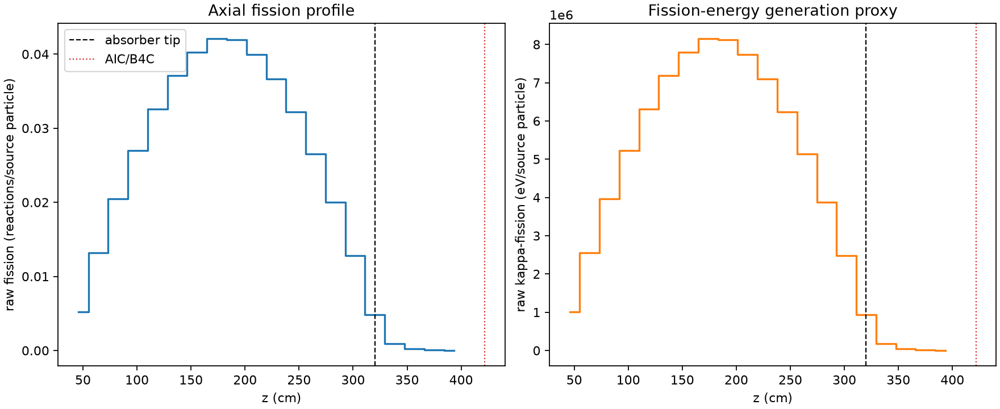
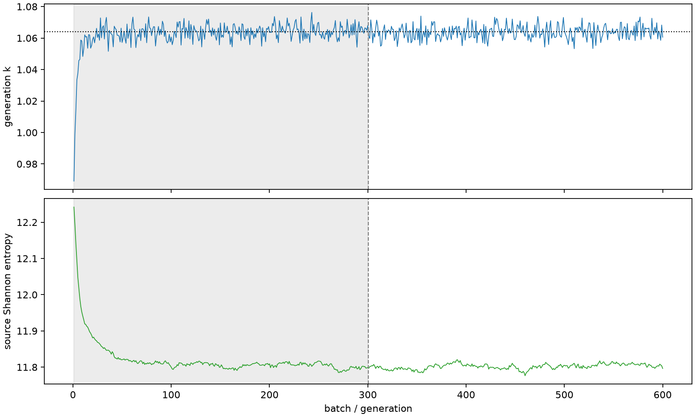

| field | value |
|---|---|
| experiment | V2-ADAPTIVE_01-0018 |
| k | 1.0639520727533158 |
| MC standard error | 0.000163612135999283 |
| seconds | 1036.2096603600075 |
| acceptance | not_assessed |
| convergence | review_required |
Completed is output integrity only; physical and statistical review required. Zero tallies do not prove zero production or zero uncertainty.
| diagnostic | value |
|---|---|
| geometric fuel voxels | 5280 |
| zero fission tally voxels | 0 |
| low signal fuel voxels | 390 |
| low signal fission share | 7.355936943529497e-05 |
| low signal kappa share | 7.359520087973773e-05 |
| important fission share | 0.9500427016675814 |
| previous filter included | 4890 |
| duration estimate s | 1562.5173488400023 |
| actual minus estimate s | -526.3076884799948 |
| fission relative MC error | statistics |
|---|---|
| all_geometric_fuel | {"voxels": 5280, "positive_mean_voxels": 5280, "zero_mean_voxels": 0, "undefined_relative_error_voxels": 0, "median": 0.009884852119893688, "p95": 0.2907494242188404, "maximum": 0.6800677028796799} |
| low_signal | {"voxels": 390, "positive_mean_voxels": 390, "zero_mean_voxels": 0, "undefined_relative_error_voxels": 0, "median": 0.35186416934356113, "p95": 0.52077094351517, "maximum": 0.6800677028796799} |
| important_95pct | {"voxels": 3476, "positive_mean_voxels": 3476, "zero_mean_voxels": 0, "undefined_relative_error_voxels": 0, "median": 0.008351562714827999, "p95": 0.012740421977771404, "maximum": 0.015413834455346507} |
| outside_previous_filter | {"voxels": 390, "positive_mean_voxels": 390, "zero_mean_voxels": 0, "undefined_relative_error_voxels": 0, "median": 0.35186416934356113, "p95": 0.52077094351517, "maximum": 0.6800677028796799} |
| kappa_fission relative MC error | statistics |
|---|---|
| all_geometric_fuel | {"voxels": 5280, "positive_mean_voxels": 5280, "zero_mean_voxels": 0, "undefined_relative_error_voxels": 0, "median": 0.009872100470462636, "p95": 0.2903196223113531, "maximum": 0.6780732737968759} |
| low_signal | {"voxels": 390, "positive_mean_voxels": 390, "zero_mean_voxels": 0, "undefined_relative_error_voxels": 0, "median": 0.3510877653521285, "p95": 0.519394236549985, "maximum": 0.6780732737968759} |
| important_95pct | {"voxels": 3476, "positive_mean_voxels": 3476, "zero_mean_voxels": 0, "undefined_relative_error_voxels": 0, "median": 0.00834073992491907, "p95": 0.012725646003088545, "maximum": 0.015394279587573322} |
| outside_previous_filter | {"voxels": 390, "positive_mean_voxels": 390, "zero_mean_voxels": 0, "undefined_relative_error_voxels": 0, "median": 0.3510877653521285, "p95": 0.519394236549985, "maximum": 0.6780732737968759} |
| axial bin | fission share | kappa-fission share |
|---|---|---|
| 1 | 0.011952007308455893 | 0.011952619629413545 |
| 2 | 0.030441118664512497 | 0.030441009720965664 |
| 3 | 0.0472512087694091 | 0.04725098676257286 |
| 4 | 0.06217158559322819 | 0.062171147353999236 |
| 5 | 0.07500754226453002 | 0.0750073875856605 |
| 6 | 0.08558318104800428 | 0.08558295491577271 |
| 7 | 0.09283564969159958 | 0.09283566452484607 |
| 8 | 0.09691460441237748 | 0.09691427744718764 |
| 9 | 0.0965574830379196 | 0.09655704667999676 |
| 10 | 0.09206936881674462 | 0.09206916340596495 |
| 11 | 0.08446783091231244 | 0.08446753378587078 |
| 12 | 0.07422448714453893 | 0.07422409052725278 |
| 13 | 0.06118533257390055 | 0.061185147059904486 |
| 14 | 0.046075917513929254 | 0.04607581368601594 |
| 15 | 0.029445185911434895 | 0.029445141730681655 |
| 16 | 0.011114436450661073 | 0.011115745592786724 |
| 17 | 0.002097906256424179 | 0.0020988232829942536 |
| 18 | 0.000475039276557622 | 0.00047526462787378376 |
| 19 | 0.00010781156520558263 | 0.00010786664798915318 |
| 20 | 2.230278825424301e-05 | 2.2315032250638296e-05 |
Histories include the inactive-to-active transition at batch 300. kappa-fission approximates fission energy production, not total heat deposition.

